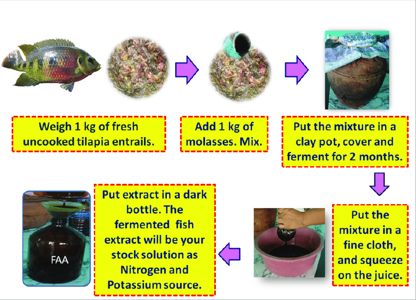

Fish-tonic/Fish Amina Acid

Ingridents
Plastic Drum with closing tap/Clay Pot
Fish Waste
Brown Sugar/Black Jaggery
Banana/waste Fruits(Optional)
fish-tonic/Fish Amina Acid Preparation Process

1.Plant Growth and Development:
Nutrient Supply:
FAA is a rich source of nitrogen, phosphorus, and potassium,
which are vital for plant growth and development.
Improved Nutrient Uptake:
It helps plants absorb water and nutrients more efficiently,
leading to better overall nutrient utilization.
Enhanced Photosynthesis:
FAA promotes photosynthesis, the process by which plants
convert light energy into chemical energy, supporting plant growth.
Faster Growth Rates:
Plants absorb amino acids quickly, leading to faster growth and healthier foliage,
especially for seedlings.
Improved Root Development:
It enhances root growth, allowing plants to access
more nutrients and water from the soil.
Increased Yields:
Studies have shown that FAA can lead to increased crop yields.
2. Soil Health:
Soil Fertility:
FAA helps to improve soil fertility by enriching it with essential nutrients.
Soil Structure:
It can improve soil structure, making it more loose and porous,
which is beneficial for root growth and water retention.
Microbial Activity:
FAA stimulates the activity of beneficial soil microorganisms,
which play a crucial role in nutrient cycling and soil health.
3. Pest and Disease Resistance:
Insect Repellent:
Some studies suggest that FAA can help to repel certain insects,
like worm moths and mites.
Disease Resistance:
By improving overall plant health, FAA can indirectly enhance a plant's resistance to diseases.
4. Other Uses:
Cost-Effective:
FAA can be made from readily available materials
like fish waste and sugar, making it a cost-effective fertilizer option for farmers.
Sustainable:
It's considered a sustainable approach to plant nutrition as it utilizes waste products.
Home Gardening:
FAA can be used in home gardens to improve the health and productivity of plants.